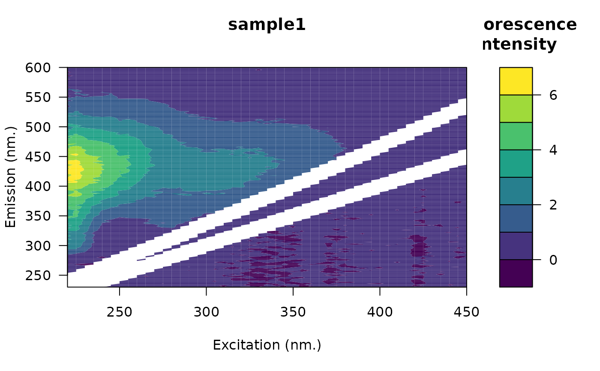
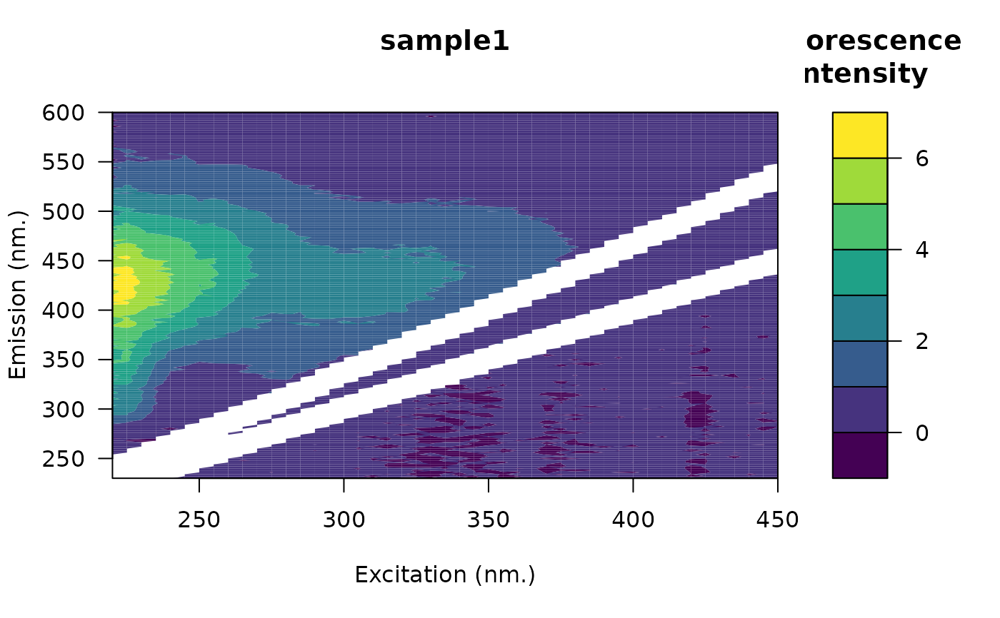

Remove Raman and Rayleigh scattering
References
Lakowicz, J. R. (2006). Principles of Fluorescence Spectroscopy. Boston, MA: Springer US.#'
Murphy, K. R., Stedmon, C. a., Graeber, D., & Bro, R. (2013). Fluorescence spectroscopy and multi-way techniques. PARAFAC. Analytical Methods, 5(23), 6557. https://doi.org/10.1039/c3ay41160e#'
https://pubs.rsc.org/en/content/articlelanding/2013/AY/c3ay41160e
Examples
# Open the fluorescence eem
file <- system.file("extdata/cary/scans_day_1", "sample1.csv", package = "eemR")
eem <- eem_read(file, import_function = "cary")
plot(eem)
 # Remove the scattering
eem <- eem_remove_scattering(eem = eem, type = "raman", order = 1, width = 10)
eem <- eem_remove_scattering(eem = eem, type = "rayleigh", order = 1, width = 10)
plot(eem)

# Remove the scattering
eem <- eem_remove_scattering(eem = eem, type = "raman", order = 1, width = 10)
eem <- eem_remove_scattering(eem = eem, type = "rayleigh", order = 1, width = 10)
plot(eem)
